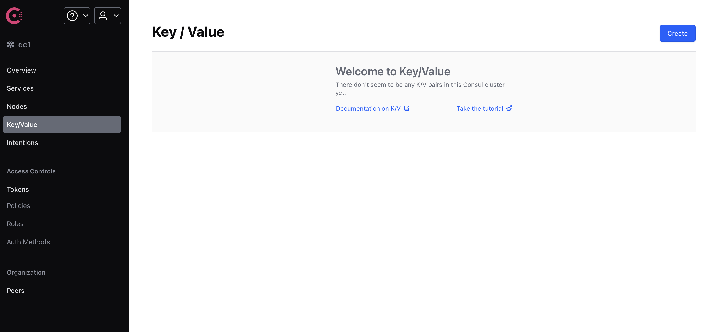
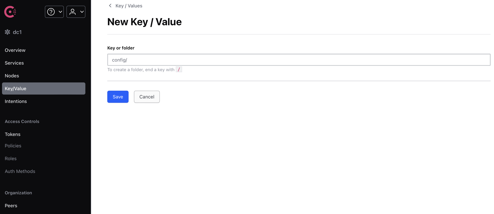
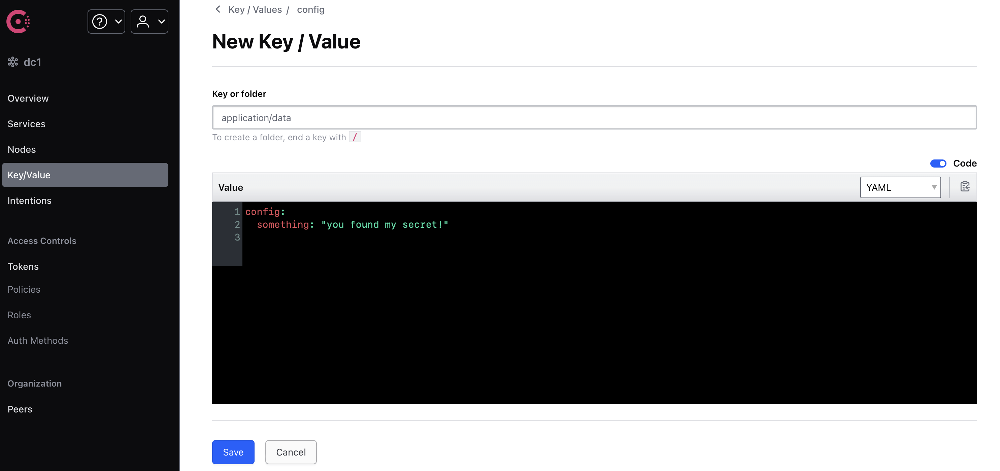
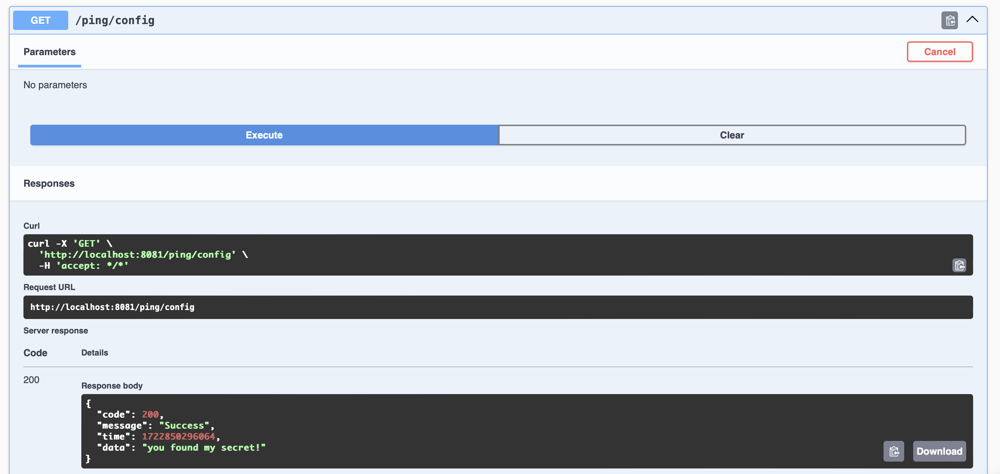

Spring Cloud 速成 Ch4 Consul 配置管理
上一部分介绍了如何使用 Consul 作为服务注册中心，本部分将介绍如何使用 Consul 作为配置中心。
注意，Consul 使用 docker 部署时，默认配置文件会在容器重启时丢失。
bootstrap.yml
application.yml 是 Spring Boot 的默认配置文件，而 bootstrap.yml 是 Spring Cloud 的默认配置文件。Spring Cloud 会先加载 bootstrap.yml，然后再加载 application.yml。因此，application.yml 中的配置会覆盖 bootstrap.yml 中的配置。
要开启bootstrap.yml功能，需要引入spring-cloud-starter-bootstrap依赖。
Spring Cloud 又引入一个bootstrap.yml配置文件的原因是，有些属性是在应用程序启动之前就要加载的，比如配置中心的配置信息。而 bootstrap.yml 就是用来加载这些配置的。正如它的名字一样，bootstrap.yml 是应用程序的“引导”配置文件，它先被加载，然后再靠它中服务的配置中心获取配置信息。因此，项目的配置便是由这三部分共同构成的。
复习一下 Spring Boot 的优先级顺序，
- 命令行参数
- application.properties或application.yml（在config子目录或当前目录）
- application.properties或application.yml（在类路径的根目录）
- 通过@PropertySource注解加载的属性文件
- 默认属性（通过SpringApplication.setDefaultProperties指定）
在 Spring Cloud 中，对于第三条，可以细化为，
- 本地的
application.yml或application.properties - 远程的配置
- 本地的
bootstrap.yml或bootstrap.properties
由上面的介绍我们不难看出，我们应该把与连接配置中心相关的配置放在bootstrap.yml中，而把其他的配置放在application.yml或 Consul 中。
spring:
application:
name: payment-service
cloud:
consul:
host: 0.0.0.0
port: 8500
discovery:
service-name: ${spring.application.name}
config:
profile-separator: "::"
format: yaml
这里的 profile-separator 我们后面会讲到，它默认是一个逗号，但是文件名有逗号这点对我而言就很怪，所以我改成了双冒号。
其他的部分，例如数据库连接，应当留在application.yml中。
Spring 配置文件 profile
Spring 的配置文件不止是这点知识，我们还要了解 profile。profile 是 Spring 用来解决不同环境下配置不同的问题的。例如，开发环境和生产环境的数据库连接信息是不同的，这时候就可以使用 profile 来解决这个问题。
例如，我们可以在application.yml中这样配置，
spring:
profiles:
active: dev
application.yml会被加载，然后根据spring.profiles.active的值，加载application-dev.yml。
bootstrap 也是同理的。
使用 Consul 作为配置中心
要用 Consul 作为配置中心，我们需要引入spring-cloud-starter-consul-config依赖。
implementation 'org.springframework.cloud:spring-cloud-starter-consul-config'
我们先为 payment 服务做一个临时的 API 用于测试，例如，
@RestController
public class TestController {
@Value("${config.info}")
private String configInfo;
@GetMapping("/config/info")
public ResponseWrapper<String> getConfigInfo() {
return configInfo;
}
}
然后在 Consul 中添加一个配置。Consul 的文件存储在 KV 中。
根据文档，在 KV 存储中，配置文件的路径应该在文件config/<服务名><分隔符><profile>/data下，其中这个分隔符默认是,，但我们前面配置成了双冒号。
这个文件夹还可以是，
config/<服务名><分隔符><profile>/dataconfig/<服务名>/dataconfig/application<分隔符><profile>/dataconfig/application/data
满足越多条件的文件夹优先级越高。例如，config/payment-service/data优先级高于config/application/data。这里的 profile 和前面介绍的相同。

选择 Create 创建文件或文件夹。注意，如果创建文件夹，名字后面加上/，否则会被当作文件名。加上/后，可以发现下面的 Value 框消失了。

然后我们根据上面所述，创建config/application/data文件，在里面添加config.info的值。

然后，我们配置@RefreshScope注解。这个注解要加载@Configuration类上，这样 Spring 才会知道这个类是需要刷新的。这里我们加在之前的TestController上。
这样当配置中心的配置发生变化时，我们的服务也会自动刷新。这个刷新的频率也是可以配置的，在 bootstrap 里改。
spring:
cloud:
consul:
config:
profile-separator: "::"
format: yaml
watch:
wait-time: 1
默认 55 秒，这里改成 1 秒。
现在我们可以测试了。
